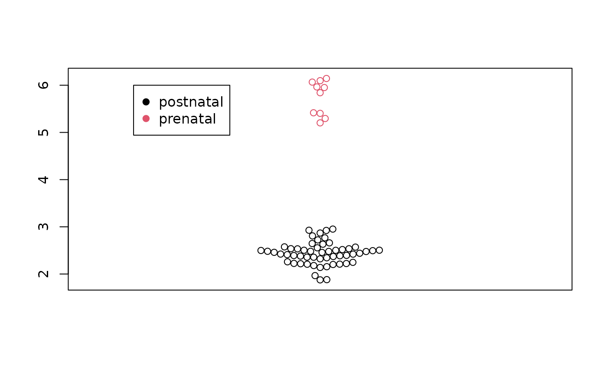
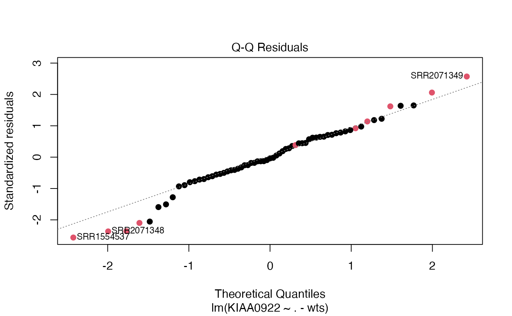

S5a: Diagnostics of a differential gene expression exercise
Vincent J. Carey, stvjc at channing.harvard.edu
January 09, 2025
Source:vignettes/S5a_lmdiagnostics.Rmd
S5a_lmdiagnostics.RmdFast forward
This document shows how SRP045638 can be retrieved and analyzed. We start with filtered and normalized data in the vGene object.
## Error in get(paste0(generic, ".", class), envir = get_method_env()) :
## object 'type_sum.accel' not found## [1] "genes" "targets" "E" "weights" "design"
head(vGene$E[,1:5])## SRR2071341 SRR2071345 SRR2071346 SRR2071347 SRR2071348
## ENSG00000223972.5 -1.6548376 -3.43059162 -3.3104740 -2.641761 -3.9493303
## ENSG00000278267.1 -0.6717114 -0.19793086 -0.5977559 -2.156334 0.1381326
## ENSG00000227232.5 3.7573137 4.60832737 4.2686324 3.335519 4.5823511
## ENSG00000284332.1 -5.4961399 -5.75251971 -6.4803990 -4.963689 -7.6497700
## ENSG00000243485.5 -0.3668569 -0.02459926 -0.6475089 -3.378727 0.6310008
## ENSG00000237613.2 -5.4961399 -3.43059162 -4.1584709 -2.641761 -6.0648075The model matrix is also important:
## (Intercept) prenatalprenatal sra_attribute.RIN sra_attribute.sexmale
## SRR2071341 1 0 8.3 0
## SRR2071345 1 0 8.4 1
## SRR2071346 1 0 8.7 1
## SRR2071347 1 0 5.3 0
## SRR2071348 1 1 9.6 0
## SRR2071349 1 1 6.4 0
## assigned_gene_prop
## SRR2071341 0.4376474
## SRR2071345 0.7776021
## SRR2071346 0.8054366
## SRR2071347 0.8374639
## SRR2071348 0.6956363
## SRR2071349 0.6855766Here are the top results from the limma-voom analysis:
data(de_results)
options(digits=3)
de_results[1:5, c("gene_name", "logFC", "t", "P.Value", "adj.P.Val")]## gene_name logFC t P.Value adj.P.Val
## ENSG00000121210.15 KIAA0922 3.28 41.9 4.24e-49 1.99e-44
## ENSG00000143494.15 VASH2 5.44 37.9 2.56e-46 6.01e-42
## ENSG00000176371.13 ZSCAN2 2.74 36.6 2.14e-45 3.34e-41
## ENSG00000196150.13 ZNF250 2.51 35.7 1.07e-44 1.25e-40
## ENSG00000103044.10 HAS3 2.49 35.1 2.69e-44 2.53e-40This is a little different from the de_results computed in the class document – because we sort by p and take the most significant results.
Assessing the association “by hand”
The vGene$E structure holds the estimated expression values, and vGene$weights are quantities that measure relative variability of the quantities in E. We can pick a gene of interest and examine the marginal distribution and estimate association.
The top DE gene was “ENSG00000121210.15”. Let’s make a data.frame with the E values, the covariates, and the weights.
target = "ENSG00000121210.15"
ind = which(rownames(vGene$E)==target)
mydf = data.frame(cbind(KIAA0922=vGene$E[ind,],
mod[,-1], wts=vGene$weights[ind,]))Now examine the marginal distribution:
hist(mydf$KIAA0922)
Interesting. There’s a big gap in the KIAA0922 expression distribution.
Exercise: Is that true for the “raw” data, or is it an artifact of all the computations we’ve done?
library(beeswarm)
beeswarm(mydf$KIAA0922, pwcol=as.numeric(factor(mydf$prenatalprenatal)))
legend(.6,6,legend=c("postnatal", "prenatal"), col=c(1,2), pch=19)
Finally, we fit the linear model:
##
## Call:
## lm(formula = KIAA0922 ~ . - wts, data = mydf, weights = wts)
##
## Weighted Residuals:
## Min 1Q Median 3Q Max
## -1.2228 -0.2991 -0.0211 0.3462 1.2114
##
## Coefficients:
## Estimate Std. Error t value Pr(>|t|)
## (Intercept) 3.10928 0.34095 9.12 6.2e-13 ***
## prenatalprenatal 3.28305 0.07267 45.18 < 2e-16 ***
## sra_attribute.RIN -0.00449 0.03444 -0.13 0.8968
## sra_attribute.sexmale 0.10582 0.06705 1.58 0.1197
## assigned_gene_prop -0.96639 0.28639 -3.37 0.0013 **
## ---
## Signif. codes: 0 '***' 0.001 '**' 0.01 '*' 0.05 '.' 0.1 ' ' 1
##
## Residual standard error: 0.547 on 60 degrees of freedom
## Multiple R-squared: 0.973, Adjusted R-squared: 0.971
## F-statistic: 545 on 4 and 60 DF, p-value: <2e-16
plot(m1, which=2, col=(as.numeric(mydf$prenatalprenatal)+1), pch=19)